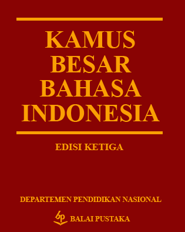

Nominal Predicate Constructions
in Indonesian
The Nineteenth International Symposium On Malay/Indonesian Linguistics (ISMIL 19)
Jambi, Indonesia, 13 June 2015
David Moeljadi
Nanyang Technological University, Singapore
* Slides can be accessed at davidmoeljadi.github.io/ISMIL19
Outline
- Nominal predicate constructions
- Copulas in Indonesian reference grammars
- Nanyang Technological University Multilingual Corpus (NTU-MC)
- Syntax of nominal predicate constructions in Indonesian
- Relational meanings
- Summary
Nominal predicate
constructions
- clauses in which the semantic content of the predication is embodied in a noun (Payne 2008: 111)
- copula clauses with copula verbs (Dixon 2009: 159)
Copula verb
- Must be able to occur in a construction with two core arguments: copula subject (CS) and copula complement (CC)
(Dixon 2009: 159-161, 185)
Copula verb
- Has relational meaning:

- Covering at least Identity relation and/or Attribution relation
(Dixon 2009: 159-161, 185)
Copula verb
- Some languages have more than one copula verb. Most commonly, one will just refer to a state and the other to coming into a state, similar to be and become in English
- "become" often shows more verbal categories than does "be". "become" often has some of the characteristics of a regular verb while still functioning as a copula
(Dixon 2009: 175)
Outline of the semantic relations in copula constructions for Indonesian
| Relation | CS | Copula | CC |
|---|---|---|---|
| Identity Possession |
|||
| Attribution | |||
| Benefaction | |||
| Location |
Copulas in Indonesian reference grammars
- Language resources
Language resources



Nanyang Technological University Multilingual Corpus (NTU-MC)
- Phrase structure grammar
Nanyang Technological University Multilingual Corpus (NTU-MC)
- Parallel corpus, sense-tagged using Wordnet (lexical database)
- Indonesian text data contains 2,197 sentences from Singapore Tourism Board (STB) website
- ongoing process of adding Sherlock Holmes short stories
- INDRA aims to parse at least 60% of the Indonesian text
(Tan & Bond, 2012; Bond et al., 2013)
Syntax
- Why grammar engineering?
Grammar engineering
- focused on syntax and semantics
Relational meanings
- Lexical (verb) acquisition
- Morphophonology
(1) Lexical (verb) acquisition
- Assumptions
Summary
Machine translation (MT)
- Automatic translation using computerized system
Bibliography
- Alwi, Hasan, Soenjono Dardjowidjojo, Hans Lapoliwa & Anton M. Moeliono. 2014. Tata Bahasa Baku Bahasa Indonesia. Jakarta: Balai Pustaka 3rd edn.
- Arka
- Arka
- Dixon, R. M. W. 2009. Basic Linguistic Theory, 2 : Grammatical Topics. Oxford: OUP Oxford.
- Macdonald, R. Ross. 1976. Indonesian reference grammar. Washington, D.C.: Georgetown University Press.
- Mintz, Malcolm W. 2002. An Indonesian & Malay grammar for students. Second edition. Perth: Indonesian/Malay Texts and Resources.
- Payne, Thomas E. 2008. Describing morphosyntax: a guide for field linguists. Cambridge: Cambridge University Press.
- Sneddon, James Neil, Alexander Adelaar, Dwi Noverini Djenar & Michael C. Ewing. 2010. Indonesian Reference Grammar. New South Wales: Allen & Unwin 2nd edn.
- Tan, Liling & Francis Bond. 2012. Building and annotating the linguistically diverse NTU-MC (NTU-multilingual corpus). International Journal of Asian Language Processing 22(4). 161–174.